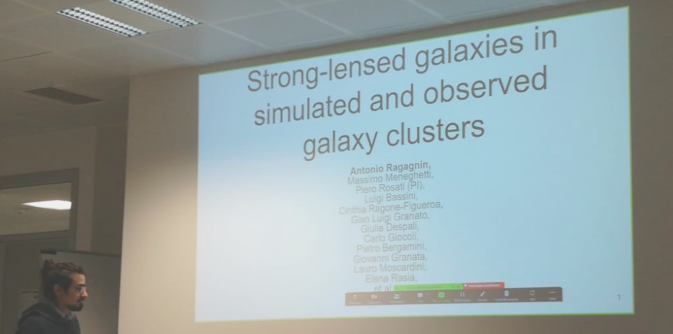

My track record
Download my Curriculum Vitae (updated at September 2024)
Check my SAO/NASA ADS complete list of pubblications
Check my ORCiD 0000-0002-8106-2742

I am fixed-term research staff at INAF-OAS. I am an expert on cosmological hydrodynamic simulations, zoom-in simulations of galaxy clusters, high performing computing (HPC), GPUs, self-interacting dark matter, and multi wavelength mock observations (X-ray, SZ, optical, and derived weak and strong lensing signals).
Collaborations: Euclid, Magneticum, OpenGadget3, HydroSims, Darkium